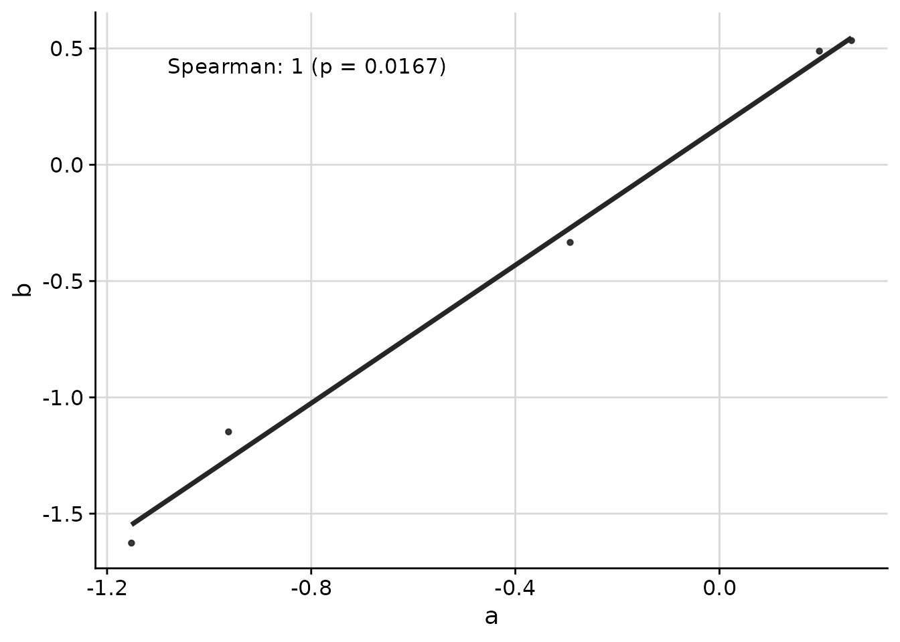
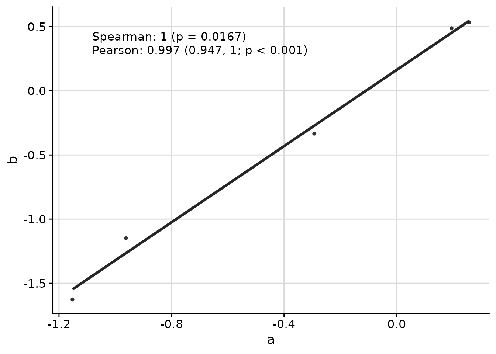
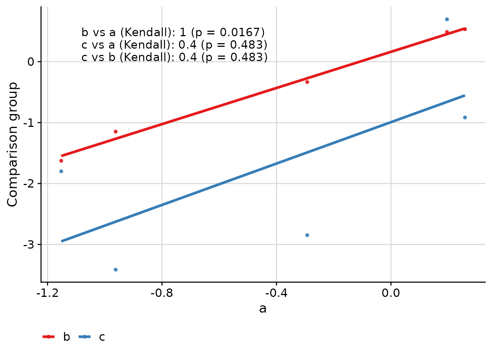
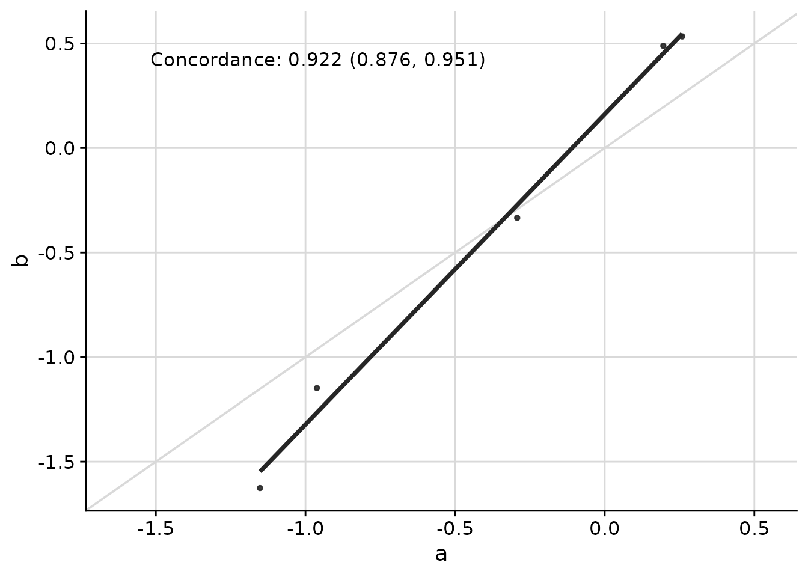
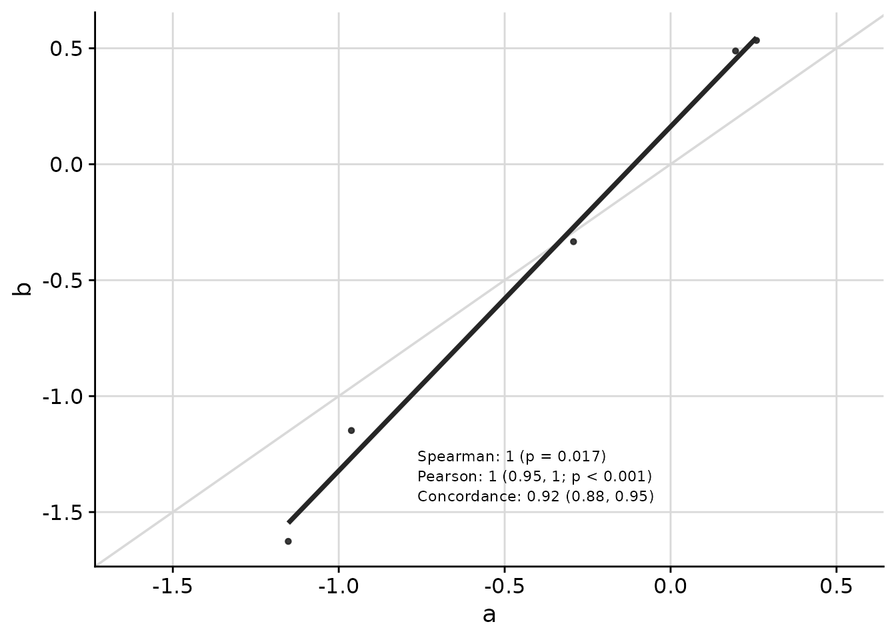
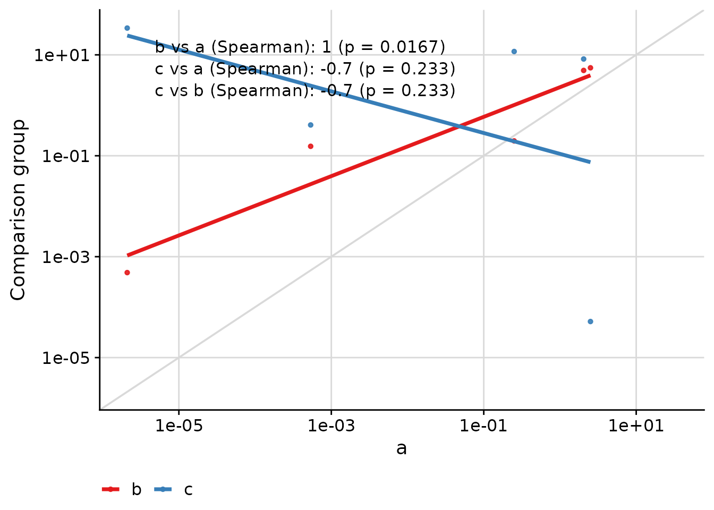
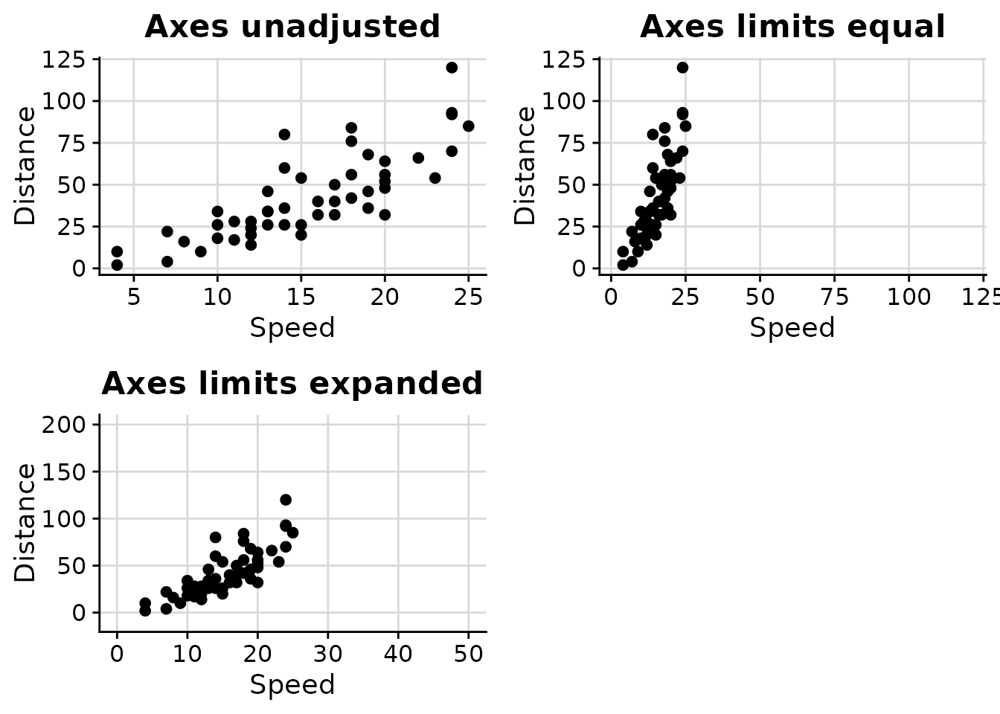
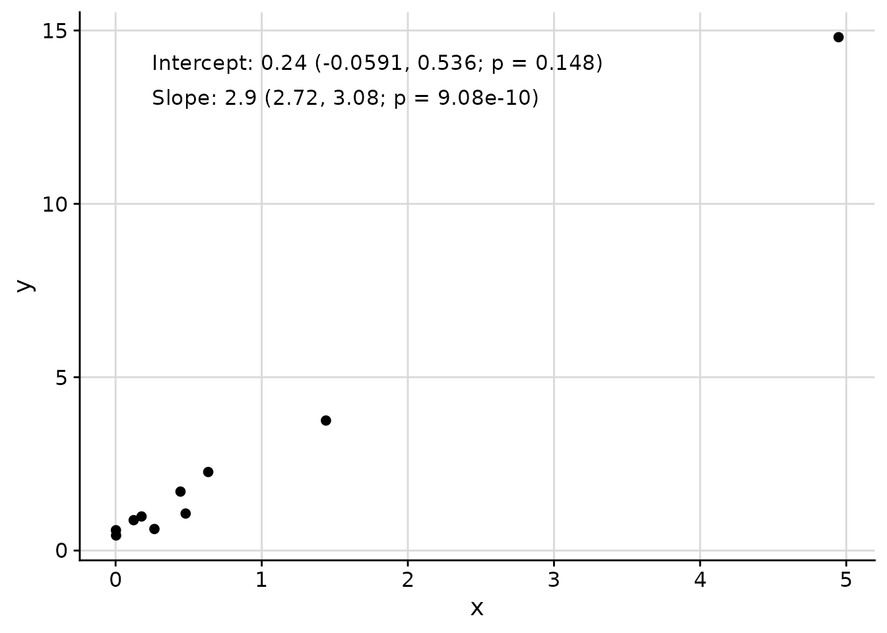

Introduction
UtilsGGSV provides utility functions for plotting in R using
ggplot2. This vignette demonstrates the main functions of
the package.
Correlation Plots with ggcorr
The ggcorr function creates scatterplots with
correlation coefficients overlaid. This is the primary function of the
package and is useful for visualizing relationships between groups of
measurements.
Basic Usage
set.seed(3)
response_vec_a <- rnorm(5)
response_tbl <- data.frame(
group = rep(letters[1:3], each = 5),
response = c(
response_vec_a,
response_vec_a * 1.2 + rnorm(5, sd = 0.2),
response_vec_a * 2 + rnorm(5, sd = 2)
),
pid = rep(paste0("id_", 1:5), 3)
)
ggcorr(
data = response_tbl |> dplyr::filter(group %in% c("a", "b")),
grp = "group",
y = "response",
id = "pid"
)
Multiple Correlation Methods
You can display multiple correlation coefficients simultaneously:
ggcorr(
data = response_tbl |> dplyr::filter(group %in% c("a", "b")),
grp = "group",
y = "response",
id = "pid",
corr_method = c("spearman", "pearson")
)
Comparing Multiple Groups
When comparing more than two groups, the function creates pairwise comparisons:
ggcorr(
data = response_tbl,
grp = "group",
y = "response",
id = "pid",
corr_method = "kendall"
)
Concordance Correlation Coefficient
The concordance correlation coefficient is useful when assessing agreement between two methods:
ggcorr(
data = response_tbl |> dplyr::filter(group %in% c("a", "b")),
grp = "group",
y = "response",
id = "pid",
corr_method = "concordance",
abline = TRUE,
limits_equal = TRUE
)
Customizing Appearance
Text placement, font size, and other visual elements can be customized:
ggcorr(
data = response_tbl |> dplyr::filter(group %in% c("a", "b")),
grp = "group",
y = "response",
id = "pid",
corr_method = c("spearman", "pearson", "concordance"),
abline = TRUE,
limits_equal = TRUE,
coord = c(0.4, 0.17),
font_size = 3,
skip = 0.04,
pval_signif = 2,
est_signif = 2,
ci_signif = 2
)
Axis Transformations
The text placement remains consistent even when axes are transformed:
ggcorr(
data = response_tbl |> dplyr::mutate(response = abs(response + 1)^4),
grp = "group",
y = "response",
id = "pid",
corr_method = "spearman",
abline = TRUE,
limits_equal = TRUE,
trans = "log10",
skip = 0.06
)
Managing Axis Limits with axis_limits
The axis_limits function helps manage axis limits,
particularly useful for forcing equal limits on both axes or expanding
axis coordinates.
data("cars", package = "datasets")
p0 <- ggplot(cars, aes(speed, dist)) +
cowplot::background_grid(major = "xy") +
geom_point() +
theme(plot.title = element_text(hjust = 0.5)) +
labs(title = "Axes unadjusted") +
labs(x = "Speed", y = "Distance")
p1 <- axis_limits(
p = p0,
limits_equal = TRUE
) +
labs(title = "Axes limits equal")
p2 <- axis_limits(
p = p0,
limits_expand = list(
x = c(0, 50),
y = c(-10, 200)
)
) +
labs(title = "Axes limits expanded")
cowplot::plot_grid(p0, p1, p2)
Adding Text Annotations with add_text_column
The add_text_column function adds text annotations to
plots at consistent positions, regardless of underlying axis
transformations.
data_mod <- data.frame(x = rnorm(mean = 1, 10)^2)
data_mod$y <- data_mod$x * 3 + rnorm(10, sd = 0.5)
fit <- lm(y ~ x, data = data_mod)
coef_tbl <- coefficients(summary(fit))
results_vec <- c(
paste0(
"Intercept: ",
signif(coef_tbl[1, "Estimate"][[1]], 2),
" (",
signif(coef_tbl[1, 1][[1]] - 2 * coef_tbl[1, 2][[1]], 3),
", ",
signif(coef_tbl[1, 1][[1]] + 2 * coef_tbl[1, 2][[1]], 3),
"; p = ",
signif(coef_tbl[1, 4][[1]], 3),
")"
),
paste0(
"Slope: ",
signif(coef_tbl[2, "Estimate"][[1]], 2),
" (",
signif(coef_tbl[2, 1][[1]] - 2 * coef_tbl[2, 2][[1]], 3),
", ",
signif(coef_tbl[2, 1][[1]] + 2 * coef_tbl[2, 2][[1]], 3),
"; p = ",
signif(coef_tbl[2, 4][[1]], 3),
")"
)
)
p <- ggplot(
data = data_mod,
aes(x = x, y = y)
) +
geom_point() +
cowplot::background_grid(major = "xy")
add_text_column(
p = p,
x = data_mod$x,
y = data_mod$y,
text = results_vec,
coord = c(0.05, 0.95),
skip = 0.07
)